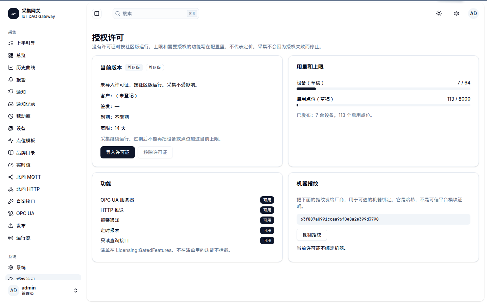
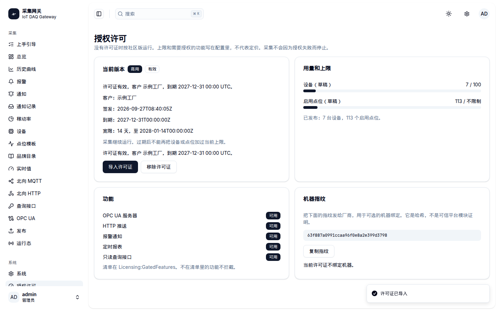
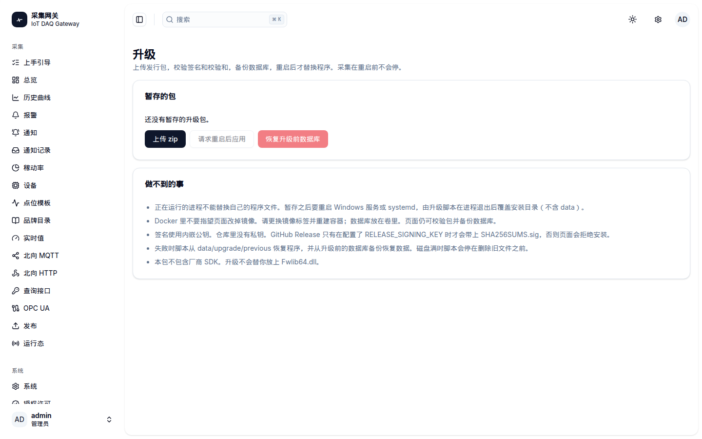
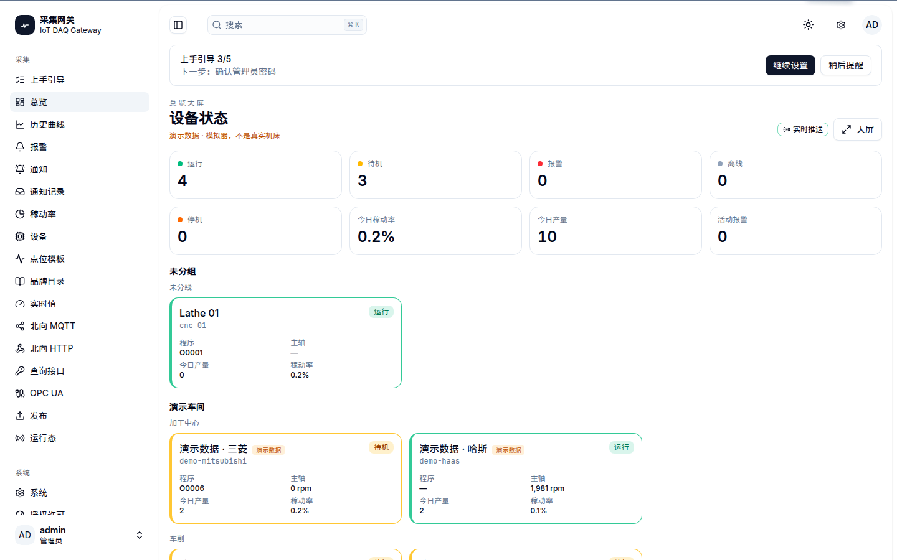

采集不中断
许可证过期或功能未授权时，已经在跑的设备继续采集。页面说明原因，不把进程打崩。
库是唯一事实
SQLite 开箱即用，PostgreSQL 可选。配置、报警和采样都在库里。从旧库启动会自己补到结构版本 6。
价格未定
社区版上限和功能清单可以改。下面的对照表不写金额，标成待定。
版本对照
| 项目 | 社区版 | 商用许可证 |
|---|---|---|
| 采集、Studio、MQTT | 包含 | 包含 |
| 设备数 / 点位数 | 配置默认，可改 | 许可证里写，也可不限制 |
| OPC UA、HTTP 推送、报警通知、定时报表、查询接口 | 默认关闭，清单可改 | 按功能标记开通 |
| 到期 | 无许可证 | 可写到期日，另有宽限期 |
| 价格 | 待定 | 待定 |
界面




English
Edge software for CNC collection. SQLite by default, PostgreSQL optional. An offline ES256 license file sets edition, optional device and point caps, expiry, feature flags, and an optional machine fingerprint. Without a file the gateway runs as community edition using limits from configuration, not a price list. Collection keeps running when a feature is blocked. In-app upgrade verifies a signed zip, backs up the database, and applies on restart. Docker image swaps stay outside the UI.